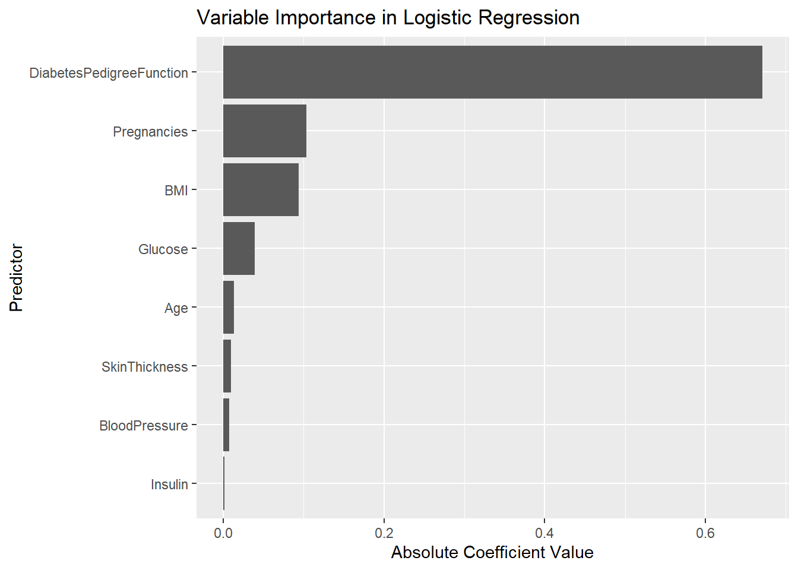
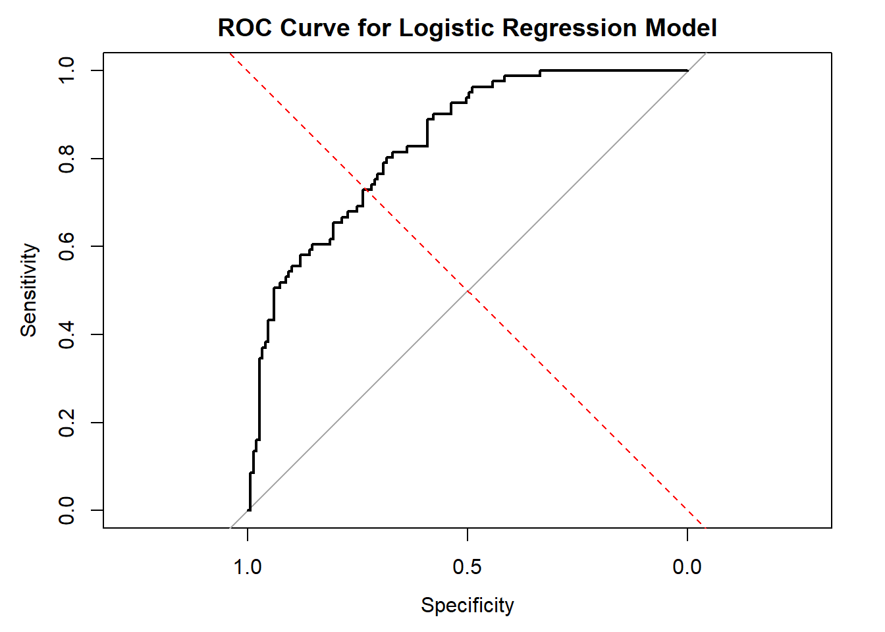
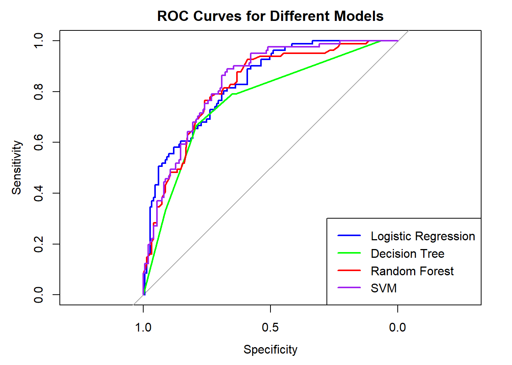

diabetes <- read.csv("C:/Users/cplay/Downloads/diabetes.csv")
diabetes <- na.omit(diabetes)Machine Learning Model Project
This Machine Learning Project was used to help predict diabetes among females patients among the Pima Indians.
head(diabetes) Pregnancies Glucose BloodPressure SkinThickness Insulin BMI
1 6 148 72 35 0 33.6
2 1 85 66 29 0 26.6
3 8 183 64 0 0 23.3
4 1 89 66 23 94 28.1
5 0 137 40 35 168 43.1
6 5 116 74 0 0 25.6
DiabetesPedigreeFunction Age Outcome
1 0.627 50 1
2 0.351 31 0
3 0.672 32 1
4 0.167 21 0
5 2.288 33 1
6 0.201 30 0diabetes$Glucose[diabetes$Glucose == 0] <- mean(diabetes$Glucose[diabetes$Glucose != 0], na.rm = TRUE)
diabetes$BloodPressure[diabetes$BloodPressure == 0] <- mean(diabetes$BloodPressure[diabetes$BloodPressure != 0], na.rm = TRUE)
diabetes$SkinThickness[diabetes$SkinThickness == 0] <- mean(diabetes$SkinThickness[diabetes$SkinThickness != 0], na.rm = TRUE)
diabetes$Insulin[diabetes$Insulin == 0] <- mean(diabetes$Insulin[diabetes$Insulin != 0], na.rm = TRUE)
diabetes$BMI[diabetes$BMI == 0] <- mean(diabetes$BMI[diabetes$BMI != 0], na.rm = TRUE)# Load the dataset
diabetes <- read.csv("C:/Users/cplay/Downloads/diabetes.csv")
# Replace zeros with NA for relevant columns
diabetes$Glucose[diabetes$Glucose == 0] <- NA
diabetes$BloodPressure[diabetes$BloodPressure == 0] <- NA
diabetes$SkinThickness[diabetes$SkinThickness == 0] <- NA
diabetes$Insulin[diabetes$Insulin == 0] <- NA
diabetes$BMI[diabetes$BMI == 0] <- NA# Replace NA values with the median of each column
diabetes$Glucose <- ifelse(is.na(diabetes$Glucose),
median(diabetes$Glucose, na.rm = TRUE),
diabetes$Glucose)
diabetes$BloodPressure <- ifelse(is.na(diabetes$BloodPressure),
median(diabetes$BloodPressure, na.rm = TRUE),
diabetes$BloodPressure)
diabetes$SkinThickness <- ifelse(is.na(diabetes$SkinThickness),
median(diabetes$SkinThickness, na.rm = TRUE),
diabetes$SkinThickness)
diabetes$Insulin <- ifelse(is.na(diabetes$Insulin),
median(diabetes$Insulin, na.rm = TRUE),
diabetes$Insulin)
diabetes$BMI <- ifelse(is.na(diabetes$BMI),
median(diabetes$BMI, na.rm = TRUE),
diabetes$BMI)
# View the processed data
summary(diabetes) Pregnancies Glucose BloodPressure SkinThickness
Min. : 0.000 Min. : 44.00 Min. : 24.00 Min. : 7.00
1st Qu.: 1.000 1st Qu.: 99.75 1st Qu.: 64.00 1st Qu.:25.00
Median : 3.000 Median :117.00 Median : 72.00 Median :29.00
Mean : 3.845 Mean :121.66 Mean : 72.39 Mean :29.11
3rd Qu.: 6.000 3rd Qu.:140.25 3rd Qu.: 80.00 3rd Qu.:32.00
Max. :17.000 Max. :199.00 Max. :122.00 Max. :99.00
Insulin BMI DiabetesPedigreeFunction Age
Min. : 14.0 Min. :18.20 Min. :0.0780 Min. :21.00
1st Qu.:121.5 1st Qu.:27.50 1st Qu.:0.2437 1st Qu.:24.00
Median :125.0 Median :32.30 Median :0.3725 Median :29.00
Mean :140.7 Mean :32.46 Mean :0.4719 Mean :33.24
3rd Qu.:127.2 3rd Qu.:36.60 3rd Qu.:0.6262 3rd Qu.:41.00
Max. :846.0 Max. :67.10 Max. :2.4200 Max. :81.00
Outcome
Min. :0.000
1st Qu.:0.000
Median :0.000
Mean :0.349
3rd Qu.:1.000
Max. :1.000 # Load necessary libraries
library(ggplot2)Warning: package 'ggplot2' was built under R version 4.3.3library(lattice)
library(caret)Warning: package 'caret' was built under R version 4.3.3library(e1071)Warning: package 'e1071' was built under R version 4.3.3set.seed(123) # For reproducibility
# Split the data into training (70%) and testing (30%) sets
trainIndex <- createDataPartition(diabetes$Outcome, p = 0.7, list = FALSE)
diabetes_train <- diabetes[trainIndex, ]
diabetes_test <- diabetes[-trainIndex, ]# Train a logistic regression model
logistic_model <- glm(Outcome ~ ., data = diabetes_train, family = binomial)
# Summary of the model
summary(logistic_model)
Call:
glm(formula = Outcome ~ ., family = binomial, data = diabetes_train)
Coefficients:
Estimate Std. Error z value Pr(>|z|)
(Intercept) -9.414605 0.972860 -9.677 < 2e-16 ***
Pregnancies 0.103658 0.038620 2.684 0.00727 **
Glucose 0.039529 0.004888 8.088 6.08e-16 ***
BloodPressure -0.007457 0.010350 -0.721 0.47121
SkinThickness 0.009673 0.015776 0.613 0.53978
Insulin -0.001711 0.001338 -1.278 0.20117
BMI 0.093879 0.021670 4.332 1.48e-05 ***
DiabetesPedigreeFunction 0.670640 0.342568 1.958 0.05027 .
Age 0.013290 0.011390 1.167 0.24329
---
Signif. codes: 0 '***' 0.001 '**' 0.01 '*' 0.05 '.' 0.1 ' ' 1
(Dispersion parameter for binomial family taken to be 1)
Null deviance: 695.03 on 537 degrees of freedom
Residual deviance: 495.49 on 529 degrees of freedom
AIC: 513.49
Number of Fisher Scoring iterations: 5library(pROC)Warning: package 'pROC' was built under R version 4.3.3Type 'citation("pROC")' for a citation.
Attaching package: 'pROC'The following objects are masked from 'package:stats':
cov, smooth, var# Generate predictions on the test set
# type = "response" gives predicted probabilities
predictions <- predict(logistic_model, newdata = diabetes_test, type = "response")
# Calculate the ROC curve
roc_curve <- roc(diabetes_test$Outcome, predictions)Setting levels: control = 0, case = 1Setting direction: controls < cases# Plot the ROC curve
plot(roc_curve, main = "ROC Curve for Logistic Regression Model")
abline(a = 0, b = 1, col = "red", lty = 2) # Reference line
# Calculate absolute values of coefficients
abs_coefs <- abs(coef(logistic_model))
# Create a data frame for plotting
var_imp_data <- data.frame(
Variable = names(abs_coefs),
Importance = abs_coefs
)
# Exclude the intercept for plotting
var_imp_data <- var_imp_data[-1, ]
# Plot using ggplot2
ggplot(var_imp_data, aes(x = reorder(Variable, Importance), y = Importance)) +
geom_bar(stat = "identity") +
coord_flip() +
labs(title = "Variable Importance in Logistic Regression",
x = "Predictor",
y = "Absolute Coefficient Value")
# Predict on the testing set
predictions <- predict(logistic_model, newdata = diabetes_test, type = "response")# Convert probabilities to binary outcomes
predicted_outcomes <- ifelse(predictions > 0.5, 1, 0)
# Confusion Matrix
confusion_matrix <- confusionMatrix(as.factor(predicted_outcomes), as.factor(diabetes_test$Outcome))
print(confusion_matrix)Confusion Matrix and Statistics
Reference
Prediction 0 1
0 134 37
1 15 44
Accuracy : 0.7739
95% CI : (0.7143, 0.8263)
No Information Rate : 0.6478
P-Value [Acc > NIR] : 2.392e-05
Kappa : 0.4718
Mcnemar's Test P-Value : 0.003589
Sensitivity : 0.8993
Specificity : 0.5432
Pos Pred Value : 0.7836
Neg Pred Value : 0.7458
Prevalence : 0.6478
Detection Rate : 0.5826
Detection Prevalence : 0.7435
Balanced Accuracy : 0.7213
'Positive' Class : 0
# Calculate Accuracy, Precision, Recall, F1 Score
accuracy <- sum(predicted_outcomes == diabetes_test$Outcome) / nrow(diabetes_test)
precision <- confusion_matrix$byClass["Pos Pred Value"]
recall <- confusion_matrix$byClass["Sensitivity"]
f1_score <- 2 * (precision * recall) / (precision + recall)
# Print the evaluation metrics
cat("Accuracy:", accuracy, "\n")Accuracy: 0.773913 cat("Precision:", precision, "\n")Precision: 0.7836257 cat("Recall:", recall, "\n")Recall: 0.8993289 cat("F1 Score:", f1_score, "\n")F1 Score: 0.8375 # Print model coefficients
print(coef(logistic_model)) (Intercept) Pregnancies Glucose
-9.414605320 0.103658100 0.039529108
BloodPressure SkinThickness Insulin
-0.007457179 0.009673003 -0.001710838
BMI DiabetesPedigreeFunction Age
0.093878682 0.670640330 0.013289553 roc_curve <- roc(diabetes_test$Outcome, predictions)Setting levels: control = 0, case = 1Setting direction: controls < cases# Plot the ROC curve
plot(roc_curve, main = "ROC Curve for Logistic Regression Model")
abline(a = 0, b = 1, col = "red", lty = 2) # Reference line
# Calculate and print the AUC
auc_value <- auc(roc_curve)
cat("AUC:", auc_value, "\n")AUC: 0.8328776 ### Decision Tree Model
library(rpart)
# Train a decision tree model
tree_model <- rpart(Outcome ~ ., data = diabetes_train, method = "class")
# Predict probabilities on the test set
tree_predictions <- predict(tree_model, newdata = diabetes_test, type = "prob")[,2]### Random Forest
# Ensure that Outcome is a factor
diabetes_train$Outcome <- as.factor(diabetes_train$Outcome)
diabetes_test$Outcome <- as.factor(diabetes_test$Outcome)
library(randomForest)Warning: package 'randomForest' was built under R version 4.3.3randomForest 4.7-1.1Type rfNews() to see new features/changes/bug fixes.
Attaching package: 'randomForest'The following object is masked from 'package:ggplot2':
margin# Train a random forest model for classification
rf_model <- randomForest(Outcome ~ ., data = diabetes_train, ntree = 100)
# Predict probabilities on the test set
rf_predictions <- predict(rf_model, newdata = diabetes_test, type = "prob")[,2]### SVM Model
library(e1071)
# Train an SVM model
svm_model <- svm(Outcome ~ ., data = diabetes_train, probability = TRUE)
# Predict probabilities on the test set
svm_predictions <- predict(svm_model, newdata = diabetes_test, probability = TRUE)
svm_predictions <- attr(svm_predictions, "probabilities")[,2]# Logistic Regression ROC and AUC
roc_logistic <- roc(diabetes_test$Outcome, predictions)Setting levels: control = 0, case = 1Setting direction: controls < casesauc_logistic <- auc(roc_logistic)
# Decision Tree ROC and AUC
roc_tree <- roc(diabetes_test$Outcome, tree_predictions)Setting levels: control = 0, case = 1
Setting direction: controls < casesauc_tree <- auc(roc_tree)
# Random Forest ROC and AUC
roc_rf <- roc(diabetes_test$Outcome, rf_predictions)Setting levels: control = 0, case = 1
Setting direction: controls < casesauc_rf <- auc(roc_rf)
# SVM ROC and AUC
roc_svm <- roc(diabetes_test$Outcome, svm_predictions)Setting levels: control = 0, case = 1
Setting direction: controls < casesauc_svm <- auc(roc_svm)
# Plot ROC Curves
plot(roc_logistic, col = "blue", main = "ROC Curves for Different Models")
plot(roc_tree, add = TRUE, col = "green")
plot(roc_rf, add = TRUE, col = "red")
plot(roc_svm, add = TRUE, col = "purple")
legend("bottomright", legend = c("Logistic Regression", "Decision Tree", "Random Forest", "SVM"),
col = c("blue", "green", "red", "purple"), lwd = 2)
# Print AUC values
cat("AUC for Logistic Regression:", auc_logistic, "\n")AUC for Logistic Regression: 0.8328776 cat("AUC for Decision Tree:", auc_tree, "\n")AUC for Decision Tree: 0.7655564 cat("AUC for Random Forest:", auc_rf, "\n")AUC for Random Forest: 0.8190405 cat("AUC for SVM:", auc_svm, "\n")AUC for SVM: 0.8371033